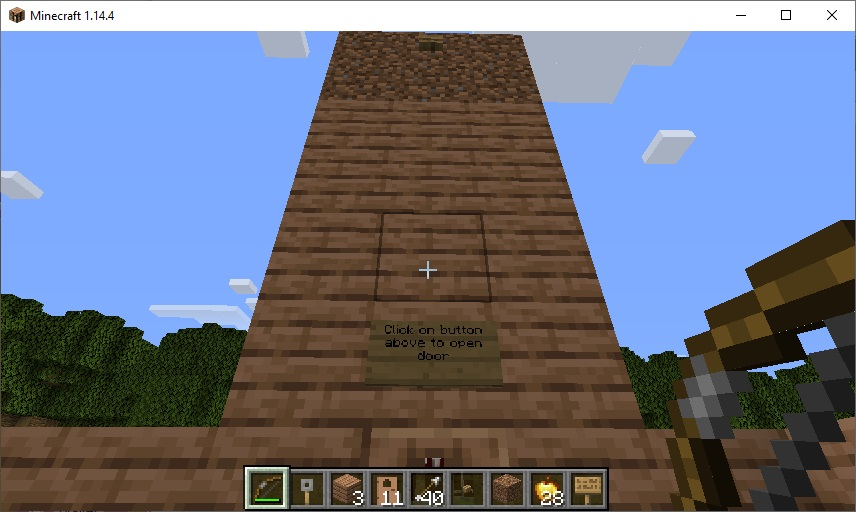
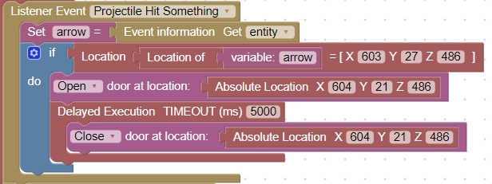

Maze Enhancement, Open door with an arrow
For this enhancement we will have a button placed out of reach
The player must hit the button with an arrow to make the door open
The door will then close after 5 seconds
This is what the minecraft blocks look like:
Note: For this type of door there should be NO key available

Here is the code which will create this behavior in the game. The [X,Y,Z] location of the button and door will be different in your world
